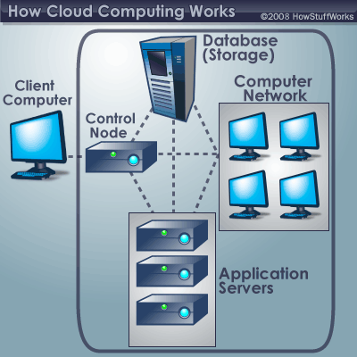
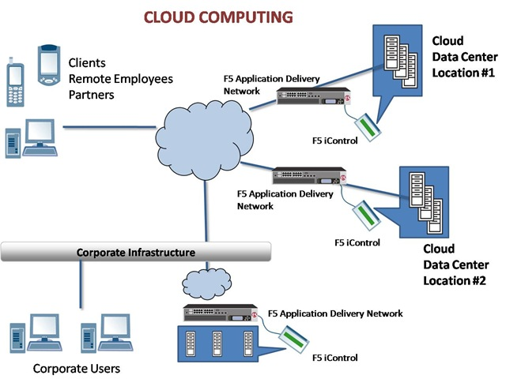

introduction | Cloud Computing Basics | Cloud Computing Applications | Cloud Computing Concers | Cloud Computing Issues | Cloud Computing Cheat Sheet
introduction
Let's say you're an executive at a large corporation. Your particular responsibilities include making sure that all of your employees have the right hardware and software they need to do their jobs. Buying computers for everyone isn't enough -- you also have to purchase software or software licenses to give employees the tools they require. Whenever you have a new hire, you have to buy more software or make sure your current software license allows another user. It's so stressful that you find it difficult to go to sleep on your huge pile of money every night.
Soon, there may be an alternative for executives like you. Instead of installing a suite of software for each computer, you'd only have to load one application. That application would allow workers to log into a Web-based service which hosts all the programs the user would need for his or her job. Remote machines owned by another company would run everything from e-mail to word processing to complex data analysis programs. It's called cloud computing, and it could change the entire computer industry.
In a cloud computing system, there's a significant workload shift. Local computers no longer have to do all the heavy lifting when it comes to running applications. The network of computers that make up the cloud handles them instead. Hardware and software demands on the user's side decrease. The only thing the user's computer needs to be able to run is the cloud computing system's interface software, which can be as simple as a Web browser, and the cloud's network takes care of the rest.
There's a good chance you've already used some form of cloud computing. If you have an e-mail account with a Web-based e-mail service like Hotmail, Yahoo! Mail or Gmail, then you've had some experience with cloud computing. Instead of running an e-mail program on your computer, you log in to a Web e-mail account remotely. The software and storage for your account doesn't exist on your computer -- it's on the service's computer cloud.
Cloud Computing Basics
When talking about a cloud computing system, it's helpful to divide it into two sections: the front end and the back end. They connect to each other through a network, usually the Internet. The front end is the side the computer user, or client, sees. The back end is the "cloud" section of the system.The front end includes the client's computer (or computer network) and the application required to access the cloud computing system. Not all cloud computing systems have the same user interface. Services like Web-based e-mail programs leverage existing Web browsers like Internet Explorer or Firefox. Other systems have unique applications that provide network access to clients.
On the back end of the system are the various computers, servers and data storage systems that create the "cloud" of computing services. In theory, a cloud computing system could include practically any computer program you can imagine, from data processing to video games. Usually, each application will have its own dedicated server.
A central server administers the system, monitoring traffic and client demands to ensure everything runs smoothly. It follows a set of rules called protocols and uses a special kind of software called middleware. Middleware allows networked computers to communicate with each other. Most of the time, servers don't run at full capacity. That means there's unused processing power going to waste. It's possible to fool a physical server into thinking it's actually multiple servers, each running with its own independent operating system. The technique is called server virtualization. By maximizing the output of individual servers, server virtualization reduces the need for more physical machines. If a cloud computing company has a lot of clients, there's likely to be a high demand for a lot of storage space. Some companies require hundreds of digital storage devices. Cloud computing systems need at least twice the number of storage devices it requires to keep all its clients' information stored. That's because these devices, like all computers, occasionally break down. A cloud computing system must make a copy of all its clients' information and store it on other devices. The copies enable the central server to access backup machines to retrieve data that otherwise would be unreachable. Making copies of data as a backup is called redundancy.
Cloud Computing Applications
The applications of cloud computing are practically limitless. With the right middleware, a cloud computing system could execute all the programs a normal computer could run.Potentially, everything from generic word processing software to customized computer programs designed for a specific company could work on a cloud computing system.Why would anyone want to rely on another computer system to run programs and store data? Here are just a few reasons:
Cloud Compiting Issues
Cloud computing issues span models (IaaS, PaaS, or SaaS) and types (public, private, or hybrid). Computing on the cloud requires vigilance about security, manageability, standards, governance, and compliance:
Cloud Computing Concerns
Perhaps the biggest concerns about cloud computing are security and privacy. The idea of handing over important data to another company worries some people. Corporate executives might hesitate to take advantage of a cloud computing system because they can't keep their company's information under lock and key.
The counterargument to this position is that the companies offering cloud computing services live and die by their reputations.It benefits these companies to have reliable security measures in place. Otherwise, the service would lose all its clients. It's in their interest to employ the most advanced techniques to protect their clients' data.
Privacy is another matter. If a client can log in from any location to access data and applications, it's possible the client's privacy could be compromised. Cloud computing companies will need to find ways to protect client privacy. One way is to use authentication techniques such as user names and passwords. Another is to employ an authorization format -- each user can access only the data and applications relevant to his or her job.
Some questions regarding cloud computing are more philosophical. Does the user or company subscribing to the cloud computing service own the data? Does the cloud computing system, which provides the actual storage space, own it? Is it possible for a cloud computing company to deny a client access to that client's data? Several companies, law firms and universities are debating these and other questions about the nature of cloud computing.
How will cloud computing affect other industries? There's a growing concern in the IT industry about how cloud computing could impact the business of computer maintenance and repair. If companies switch to using streamlined computer systems, they'll have fewer IT needs. Some industry experts believe that the need for IT jobs will migrate to the back end of the cloud computing system.
Another area of research in the computer science community is autonomic computing. An autonomic computing system is self-managing, which means the system monitors itself and takes measures to prevent or repair problems. Currently, autonomic computing is mostly theoretical. But, if autonomic computing becomes a reality, it could eliminate the need for many IT maintenance jobs.
Cloud Computing: Cheat Sheet
Stuff you need to know:
Sources:
Judith Hurwitz, Robin Bloor, Marcia Kaufman, and Fern Halper, For Dummies, http://www.dummies.com/how-to/content/cloud-computing-issues.html
Jonathan Strickland, How Stuff Works , http://science.howstuffworks.com/csi.htm/printable